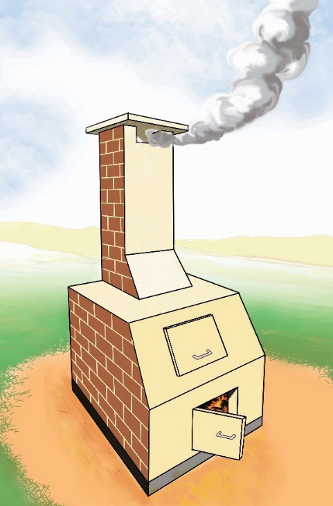

Burning
Burning the wastes at high temperatures is called Incineration. To avoid air pollution (caused by the burning of waste), proper filters are used. For handling sludge, the direct incineration method without anaerobic digestion was found to be a more preferred sustainable approach. For fossil fuel conservation and waste disposal, the technology of coal power plants along with the waste incineration method was considered as a promising technology. Degradation technologies such as plasma, mechanical chemistry, hydrothermal, photocatalytic and biodegradation have proved that they have good purification effects and are considered the best. Figure 6.11 shows the incineration of wastes.
